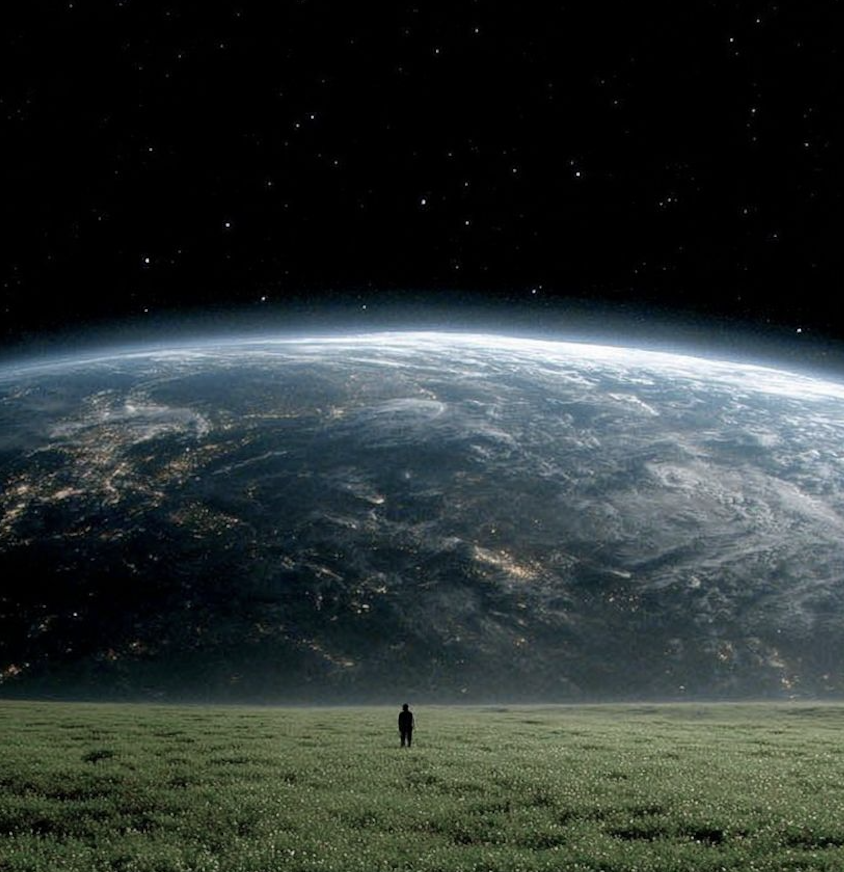
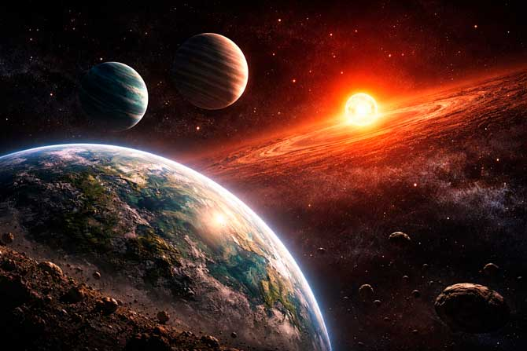

¿Qué ocurriría?
Una detención repentina de la rotación terrestre provocaría graves y generalizadas alteraciones en la estructura física, el clima y los ecosistemas del planeta. El efecto inmediato sería la desaparición de la fuerza centrífuga que actúa sobre la superficie terrestre. Esta fuerza contribuye al ligero abultamiento de la Tierra en el ecuador. Sin ella, el planeta comenzaría a transformarse en una esfera perfecta, provocando cambios drásticos en los océanos. El agua de las regiones ecuatoriales se precipitaría hacia los polos, pudiendo sumergir grandes extensiones de tierra y modificar las costas.
Consecuencias
- 🌊 Los océanos se moverían violentamente.
- 🌬️ Todo lo que está anclado saldría disparado a 1600 km/h.
- 🌙 El ciclo día-noche se alterarían, dando lugar a períodos prolongados de luz y oscuridad.
- 🌋 Las temperaturas cambiarían drásticamente.
- 🌳 Los cambios climáticos y geográficos tendrían efectos devastadores en los ecosistemas y la biodiversidad.
